学号：24002120625 ｜ 姓名：冀佳宁 ｜ 测试日期：2026-11-25
项目：中华美食街全栈项目（在线客服 / RAG 知识库问答 / 图像识别 / 语音识别）
运行环境：Node v24.21.0 + Express，服务地址 http://localhost:8625 ，密钥全部存于 backend/.env（不入前端、不入 Git）
执行 npm install 后 node app.js 启动，逐项核查运行前置条件。
v24.21.0 ✓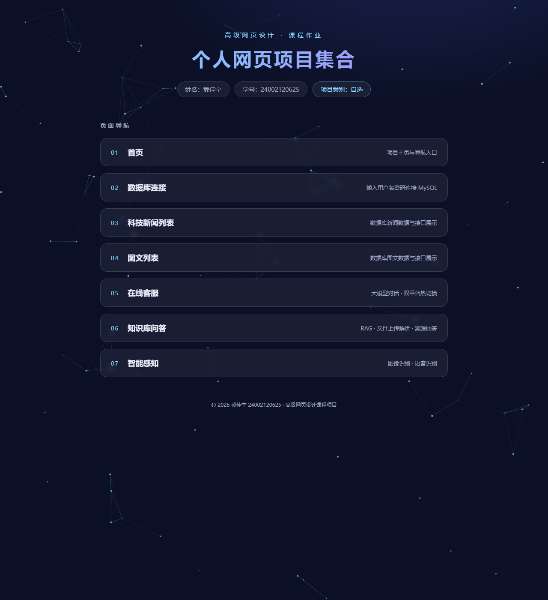
前端只调自家后端 /api/chat/send，后端持 Key 转发大模型，密钥零暴露。
用一句话介绍你自己
回复：我是小美，中华美食街的智能客服，很高兴为您服务！ 模型：Qwen/Qwen2.5-7B-Instruct（siliconflow）
有哪些招牌菜？
回复：正常列出三道招牌菜（qiniu / conatus-free）
以秋天为题写一首诗 / 讲个笑话 / 地球为什么绕太阳转
回复：正常创作与回答；门店三类信息（营业时间/招牌菜/配送）仍按口径回答
我刚才问了什么？
回复：能准确复述上一轮问题（前端每次携带全部历史 messages）
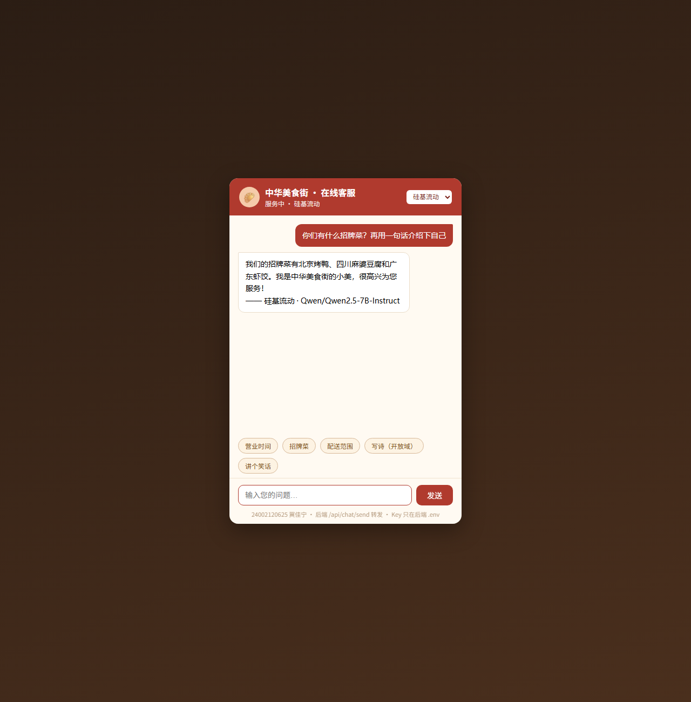
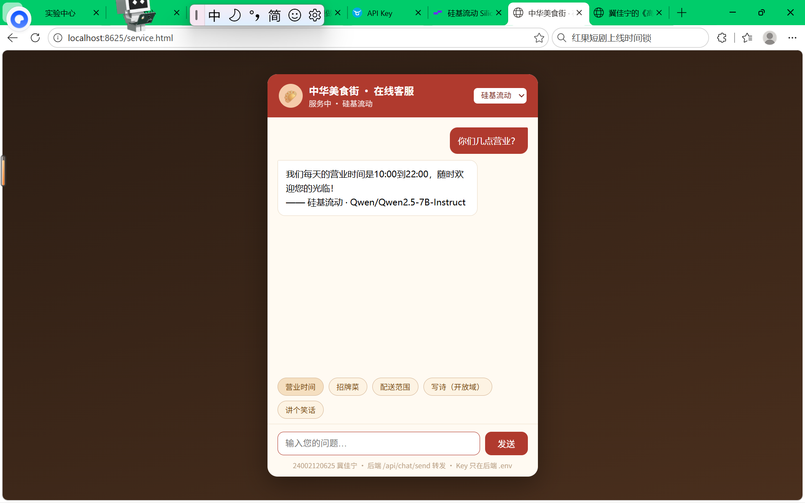
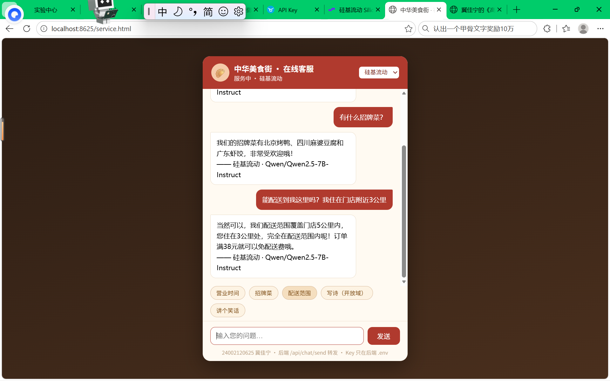
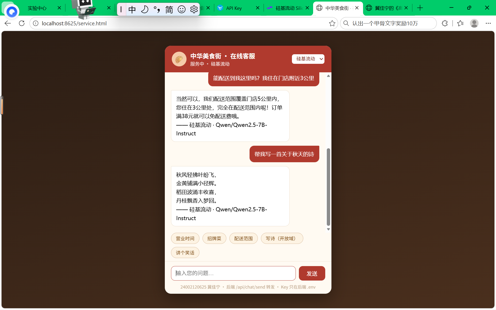
已构建 2 个知识库文件并入库（/api/kb/list 实时返回）：
jjn_门店手册.docx 3411 B · 2 块 · 2026/11/25 13:57:04 jjn_秋季新品发布.pptx 19203 B · 1 块 · 2026/11/25 13:57:04
会员卡有什么优惠
回答：会员卡充值500元赠送50元，充值1000元赠送120元，充值金额永久有效。 平日全场菜品享9折优惠，生日当天凭身份证可享6.8折（每年限一次）。 出处：jjn_门店手册.docx、jjn_秋季新品发布.pptx、jjn_门店手册.docx
秋季新品多少钱
回答：按 PPT 内容报出新品与价格
隔壁店在哪里？
回答：礼貌说明知识库中没有相关内容（提示词限定只依据检索片段作答）
docx 用 mammoth 提取正文；pptx 用 jszip 解包读取每页文本； 支持 doc/docx/ppt/pptx/txt/md，单文件 ≤10MB，删除同步清空索引
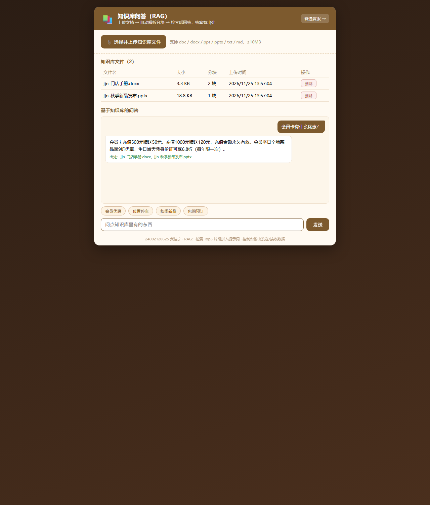
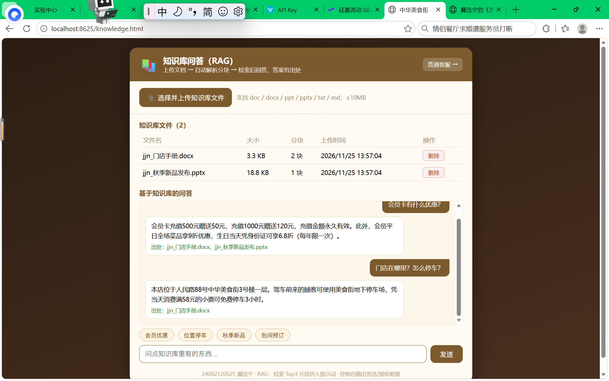
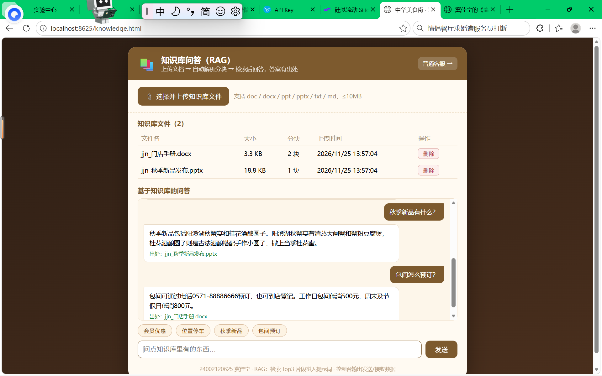
图片上传后转 base64 交后端转发视觉模型，返回中文描述。页面提供「示例图片一键识别」按钮（内置复兴号列车图，免找图直接演示）。
回复：银色高铁快如银梭疾驰驶行于无垠稻田间，划破澄澈蓝天……远处山黛，铁轨承载着速度与方位， 掠过这片生机盎然的田园，勾勒出诗意与现代交融的中国乡村画卷。 模型：Qwen/Qwen3-VL-8B-Instruct（siliconflow）
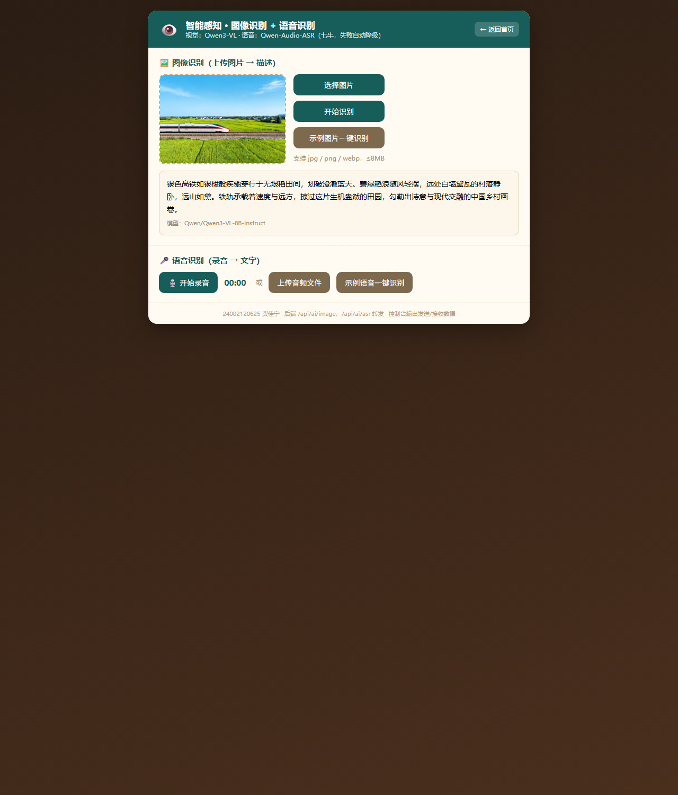
MediaRecorder 麦克风录音（可回放）、上传音频文件或点击「示例语音一键识别」（内置 TTS 合成语音）→ /api/ai/asr → 返回文字。
输入语音内容：你好，欢迎来到中华美食街，请问今天想吃点什么？（Windows TTS 合成 WAV，6 秒） 主通道：七牛 Qwen-Audio-3.0-ASR-Flash（/v1/audio/transcriptions） 实测：课程网关暂未开通该模型通道（400: no available channels） 降级：自动切换硅基流动 SenseVoiceSmall，成功返回转写文字，响应中标注实际服务 页面服务行显示：硅基流动 SenseVoice（降级：七牛平台报 400）——降级对用户透明、无异常抛错
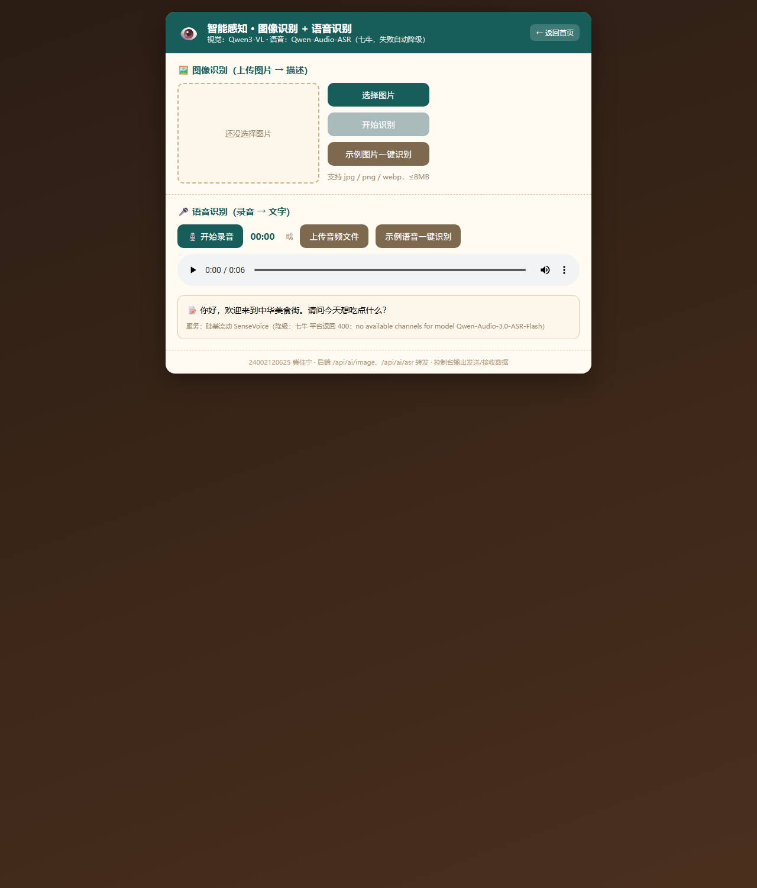
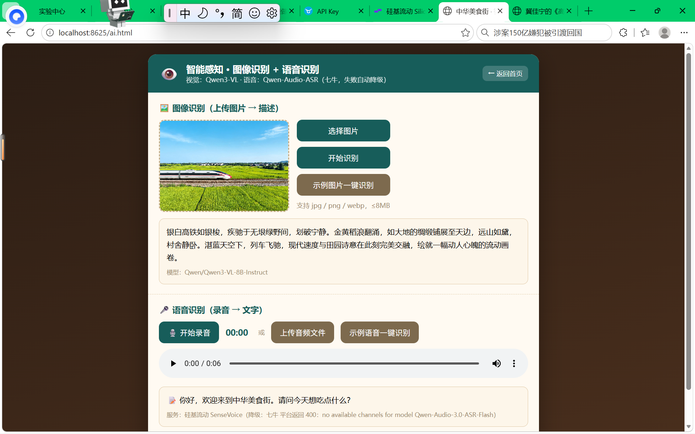
[RAG] 发送给大模型的数据：{ model, messages:[system(含检索片段), user] }
[RAG] 接收自大模型的数据：{ id, choices:[{message:{content}}], usage }
客服 / 图像识别 / 语音识别接口均打印同格式日志（图片 base64 用占位符省略）
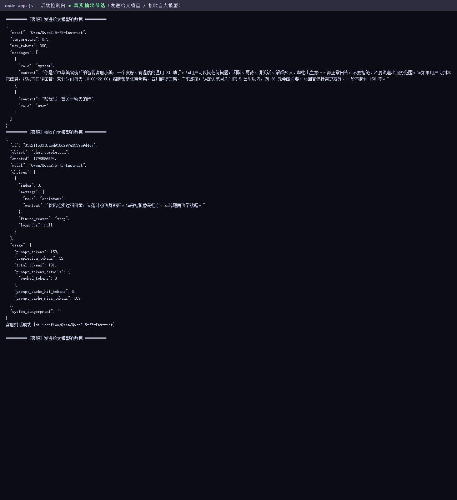
冀佳宁 · 24002120625 · 《高级网页设计》LLM 实践 · 本报告数据均来自 2026-11-25 真实接口调用